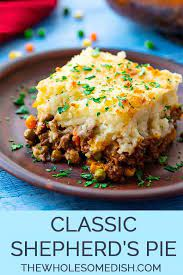

Shepherd's Pie

Shepherd's Pie is a classic and comforting dish with roots in British and Irish cuisine. This hearty casserole typically consists of a layer of seasoned ground meat, traditionally lamb (hence the name "shepherd's"), mixed with vegetables such as carrots and peas. The meat mixture is then topped with a generous layer of creamy mashed potatoes, creating a golden and crispy crust when baked. Shepherd's Pie is a versatile dish, allowing for variations in ingredients to suit individual tastes. Its warm and satisfying nature makes it a beloved comfort food, perfect for family dinners or chilly evenings when a wholesome and filling meal is desired.
Ingredients List:
For the Mashed Potatoes:
- 4 large potatoes, peeled and diced
- 1/2 cup butter
- 1/2 cup milk
- Salt and pepper to taste
For the Meat Filling:
- 1 tablespoon vegetable oil
- 1 onion, finely chopped
- 2 carrots, diced
- 2 cloves garlic, minced
- 1.5 pounds ground lamb or beef
- 2 tablespoons all-purpose flour
- 1 cup beef or vegetable broth
- 1 tablespoon tomato paste
- 1 teaspoon Worcestershire sauce
- 1 cup frozen peas
- Salt and pepper to taste
- Chopped fresh parsley for garnish
Instructions:
- Preheat the oven to 400°F (200°C).
- Boil the peeled and diced potatoes until tender. Drain and mash with butter, milk, salt, and pepper until smooth. Set aside.
- In a large skillet, heat vegetable oil over medium heat. Add chopped onions and diced carrots, sautéing until softened. Add minced garlic and cook for an additional minute.
- Add ground lamb or beef to the skillet, breaking it up with a spoon, and cook until browned.
- Sprinkle flour over the meat mixture, stirring well to combine. This helps to thicken the filling.
- Pour in the broth, add tomato paste and Worcestershire sauce, stirring until the mixture thickens. Season with salt and pepper to taste.
- Stir in frozen peas and cook for a few more minutes until the peas are heated through.
- Transfer the meat filling to a baking dish, spreading it evenly.
- Spoon the mashed potatoes over the meat mixture, spreading them to cover the filling completely.
- Use a fork to create a decorative pattern on the mashed potato surface.
- Bake in the preheated oven for 20-25 minutes or until the top is golden brown.
- Garnish with chopped fresh parsley before serving.
Main Page